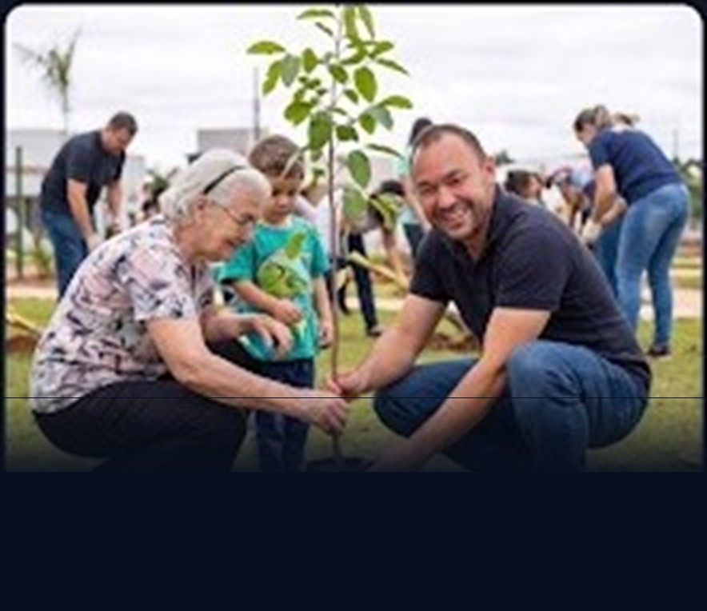
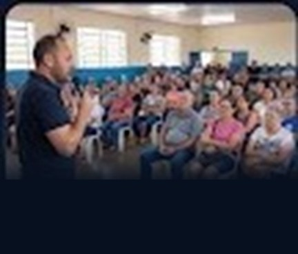
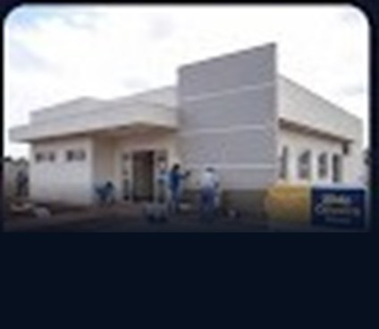
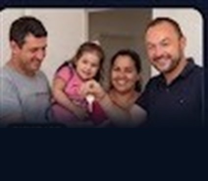

AMOR POR TOLEDO,
RESPEITO PELO POVO
“Quem ama Toledo trabalha de verdade. Tudo o que conquistamos até aqui foi fruto de ouvir a nossa gente e colocar a mão na massa.”
Política de verdade não se faz com promessas vazias nem palanques distantes. Faz-se com presença diária nos bairros, respeito pelo trabalhador e obras que transformam vidas. Estar ao lado do povo de Toledo é a nossa maior missão.
Trabalho contínuo, transparência e proximidade com cada família toledense.
De Filho da Terra a Prefeito:
Uma História Forjada no Trabalho
Origem em Toledo-MG
Criado na simplicidade do interior mineiro, Zildo aprendeu desde cedo com sua família que a palavra empenhada tem valor absoluto e que a dignidade vem do suor honesto e do respeito a cada ser humano.
Presença e Compromisso Social
Sua ligação direta com a comunidade e o olhar atento para quem mais precisava consolidaram uma liderança respeitada. Zildinho sempre esteve perto das pessoas, apoiando iniciativas comunitárias e esportivas.
Gestão que Faz Acontecer
À frente da Prefeitura Municipal, colocou a casa em ordem, destravou moradias populares e levou asfalto e iluminação LED aos bairros esquecidos. Uma gestão marcada pelo carinho e pela eficiência executiva.
Quem é Zildo Oliveira?
Uma Vida Dedicada a Toledo
De balconista e jovem sonhador a líder comunitário, empresário realizador e Prefeito de Toledo-MG. Conheça o homem por trás da gestão que une honestidade, trabalho de sol a sol e amor genuíno pelo povo toledense.
Da Simplicidade do Balcão à
Transformação Histórica de Toledo
Zildo Oliveira não nasceu em berço de ouro. Cresceu aprendendo na prática o que significa suor honesto, honrar a palavra e colocar a família e a comunidade em primeiro lugar. Como comerciante e empreendedor, construiu uma história sólida de trabalho gerando empregos e oportunidades para nossa gente.
Chamado pela própria população a liderar os destinos do município, trouxe para a vida pública a disciplina, a agilidade executiva e a compaixão de quem sabe exatamente onde o sapato aperta para cada trabalhador de Toledo.
"Política de verdade não se faz trancado em gabinete; faz-se no meio do povo, olhando nos olhos de cada mãe, ouvindo os anseios dos bairros e entregando obras que durem gerações."
Nossos Projetos
Obras e Programas Ativos em Toledo
Acompanhe em tempo real o progresso das principais ações da gestão municipal. Cada projeto carrega o compromisso de transformar Toledo em uma cidade melhor para todos.
Minha Casa Toledo
Habitação SocialPrograma de construção e entrega de unidades habitacionais populares com infraestrutura completa. Regularização fundiária e escrituras para famílias de baixa renda.
Asfalto nos Bairros
InfraestruturaPavimentação asfáltica de qualidade nos bairros mais necessitados, recuperação de pontes rurais e drenagem pluvial para acabar com os alagamentos.
Iluminação LED
Cidade SeguraConversão de 100% da iluminação pública municipal para tecnologia LED econômica, garantindo segurança noturna e redução de custos com energia.
Saúde Perto de Você
Ação SocialAmpliação do atendimento médico nos postos de saúde, garantia de medicamentos básicos e transporte gratuito de pacientes para tratamentos especializados.
Água e Saneamento
Zona RuralExtensão da rede de água tratada e saneamento básico para comunidades rurais. Perfuração de poços artesianos e manutenção de estradas vicinais.
Educação e Esporte
FuturoReforma e ampliação de escolas municipais, quadras poliesportivas e programas de esporte para jovens. Investimento direto no futuro de Toledo.
CUIDADO COM O POVO:
TRABALHO QUE TRANSFORMA A VIDA DA NOSSA GENTE
Política se faz com presença, ouvindo cada bairro e garantindo dignidade para as famílias de Toledo-MG.

Plano Diretor com a Comunidade
Construindo o futuro de Toledo, juntos.

Ouvindo Cada Família
Assembleias de bairro em andamento.

Nova Unidade de Saúde
Atendimento descentralizado e moderno.
Canteiro de Obras
Zildinho acompanha cada detalhe.

Ação Social & Habitação
Apoio direto e moradia digna para as famílias.